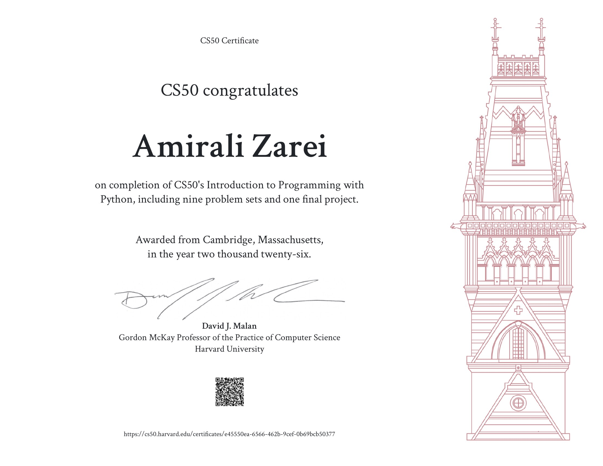

CS50P: Introduction to Programming with Python
Certificate, final project, and code — completed as part of Harvard's CS50P course.
Python is where I turn analytical thinking into something that actually runs. Over nine problem sets and a final project, I moved from basic syntax to writing structured, tested, real-world programs — and it's become the main tool I use to explore ideas in math, logic, and data.
What I Can Build With It
Functions & Control Flow
File I/O & Data Processing
Exception Handling
Object-Oriented Programming
Regular Expressions
Unit Testing
Working with Libraries & APIs
Command-Line Programs
I use these to build small tools that solve real problems for me — from automating repetitive tasks to prototyping the logic behind mathematical and physics-related ideas before turning them into something bigger.
Certificate

Final Project — Video Walkthrough
Code
All problem sets and the final project are on my GitHub profile.